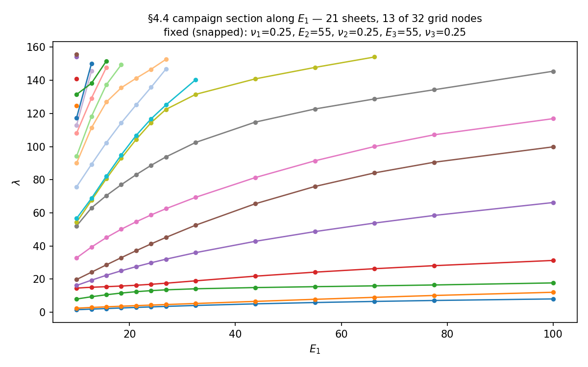
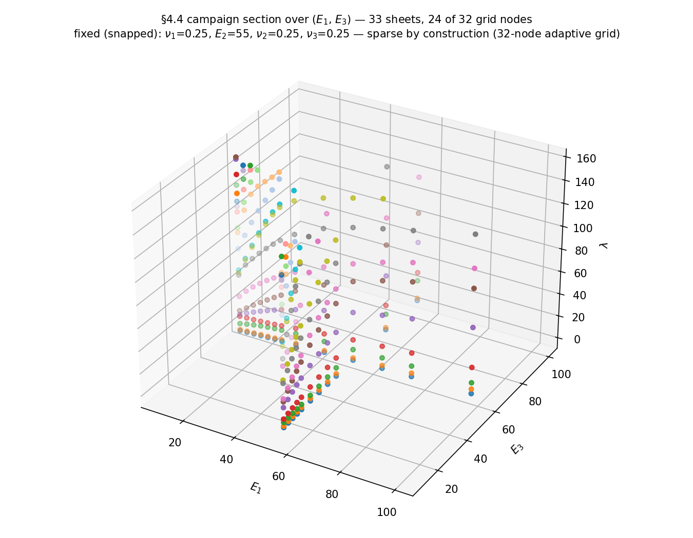
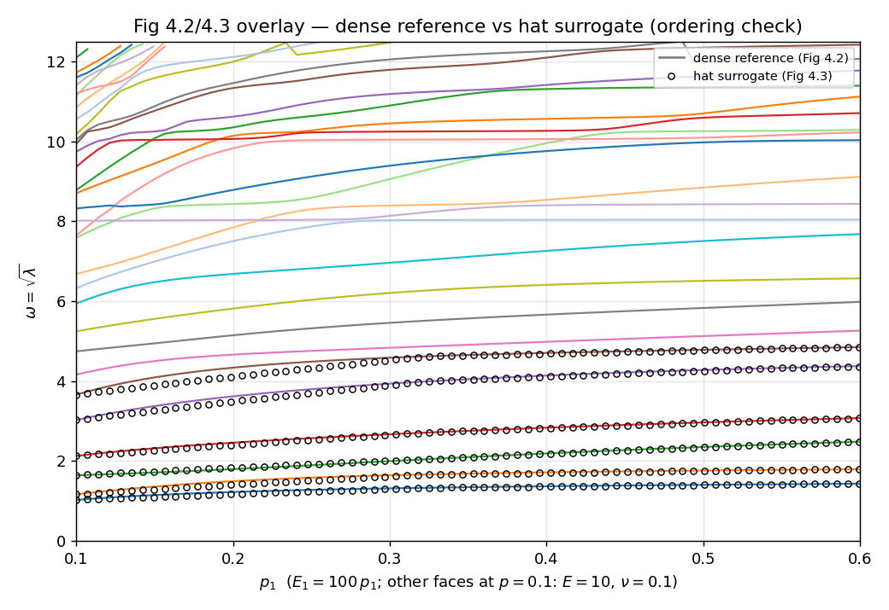
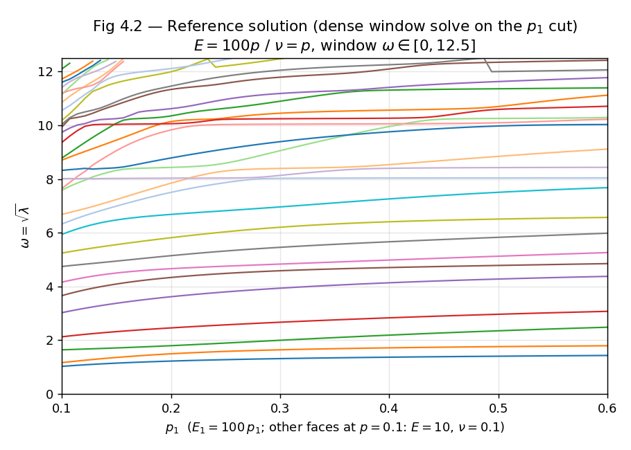
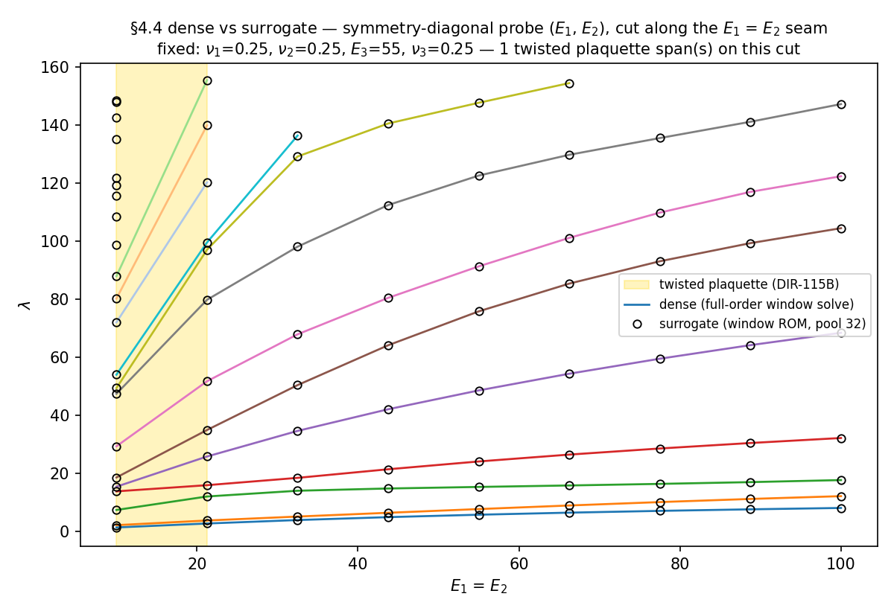
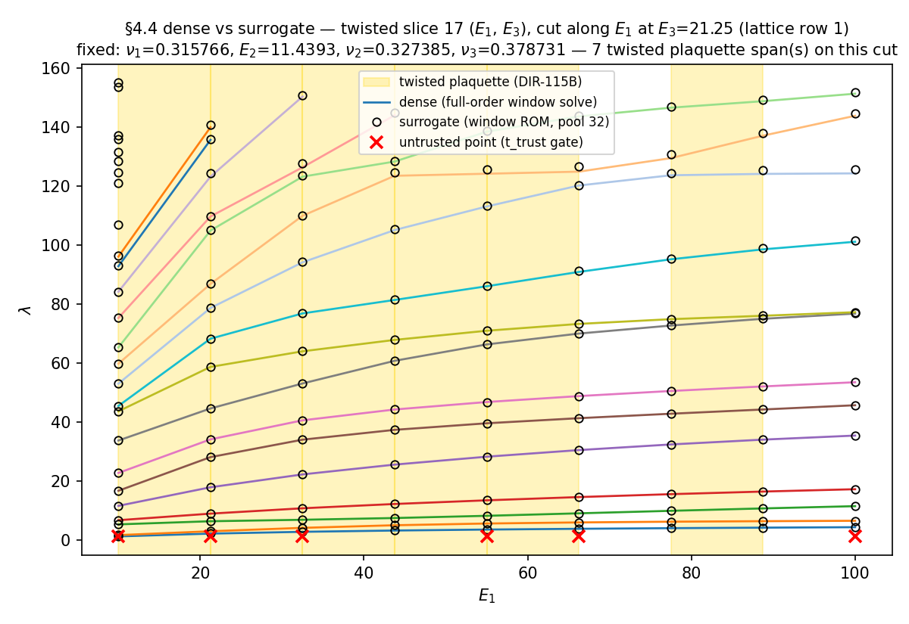
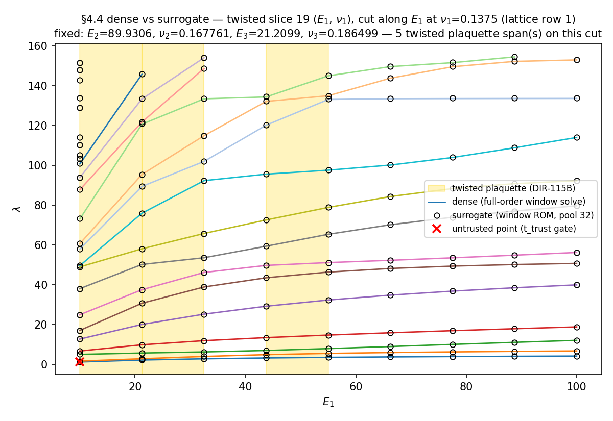
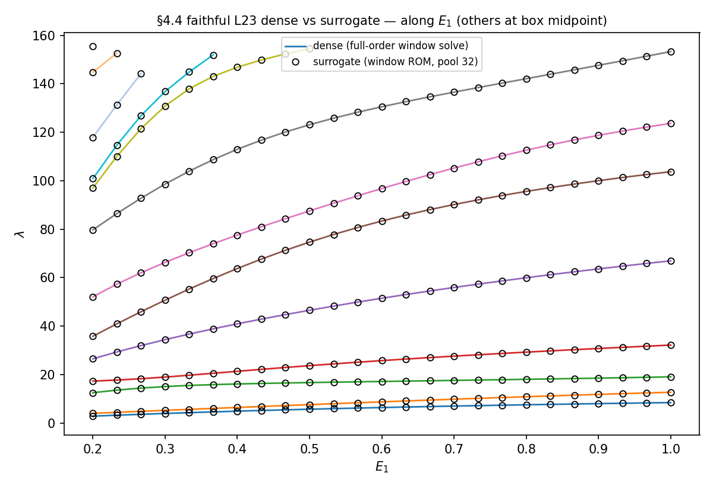

§4.4 6D campaign — the correctness evidence
In 1D and 2D the correctness certificate of an adaptive-greedy run is a picture: the colored eigenvalue branches over the parameter grid, where a mis-matched pair is visible as a color jumping tracks. The §4.4 6D campaign has no such picture — six parameter dimensions admit no global plot, and the dissertation’s own answer at 6D was spot-checked slices. This page replaces the eyeball certificate with a structured argument in five strands, each grounded in a committed, test-pinned artifact:
- You can still look — dissertation-style 1D/2D cuts of the 6D run, surrogate vs dense truth.
- Nothing was lost — a subspace-independent inertia count certifies the window solves are complete.
- The matching is globally consistent — plaquette holonomy + ν-index adjudication over 2-faces.
- The error rate is measured, not assumed — a sampled statistical audit with an exact confidence interval.
- It is not an artifact of the setup — mesh-independent geography and serial ≡ parallel byte-identity.
All numbers below are read from committed artifacts (tests/artifacts/dir_115/slice_audit.json, tests/artifacts/dir_115/holonomy_6d.json, tests/artifacts/dir_113/inertia_certificate_6d.json) pinned by the fast test suite, and every figure carries a provenance row in the figure MANIFEST. The run under examination is the faithful campaign configuration: plane-strain elasticity on the L-shape with per-face (Eᵢ, νᵢ), the 6D box [10,100]³×[0.1,0.4]³ (interleaved), Window mode on λ ∈ [0, 156.25], t_π = 0.57, t_λ = 0.03, t_c = 0.1, n_dof = 1846, 32 grid nodes through L4.
This page argues one thing: the campaign’s matched eigensurface structure is correct — the branch identifications the greedy run certified are the ones a dense reference computes, up to a quantified, localized error rate. It does not claim ROM prediction accuracy. On the faithful ~10-mode window the campaign’s Window-snapshot ROM breaches the DIR-053 error ceilings (max lowest-20 eigenvalue rel-err 1.1·10⁻¹ — basis thinness, not a missed window); that breach is reported and dissected on the campaign page and redesigning the N-D basis pool for the true window is a separate open item. Certifying what the surfaces are and how well a thin basis predicts them are different questions; this page answers the first.
Strand 1 — you can still look
The eyeball certificate does not scale to 6D, but honest cuts of it do. Two figure families, both rendered from the campaign’s own run cache (cache identity enforced by SHA-256 manifest hash).
First, the run’s own adaptive grid, sectioned and colored by sheet id — the matching-driven decomposition computed from the stored edge matchings (union-find over every tested edge), never sort order. The 32-node 6D grid is sparse by construction, so the driver selects the most-populated hyperplane and the title states how many of the run’s nodes the cut actually contains:


Second, surrogate-vs-dense branch overlays along 1D cuts through the audit slices of Strands 3–4. Dense branches are full-order window solves at every cut point (the campaign’s own solve path); the surrogate is the bounded-pool window ROM. Cut points failing the audit’s eigenvalue trust gate are marked, never hidden.
The “surrogate” on this page is a Galerkin window ROM (window_rom_predict): at a query µ it projects K(µ), M(µ) onto a bounded pool of nearby snapshot eigenvectors and solves the small projected eigenproblem — so it consumes eigenvectors and does a mini-eigensolve, and returns eigenpairs. That is a different object from the dissertation’s §4.4.5 surrogate, which is a scalar hat interpolation of the stored eigenvalues keyed to the sparse-grid multi-index — no eigenvectors, no eigensolve, eigenvalues only. The distinction is not cosmetic: the thesis surrogate exists precisely to honour the §4.4 memory premise (eigenvectors are discarded after matching), whereas the Galerkin ROM needs them. So these overlays certify that a more capable surrogate tracks dense truth on the 6D run; they are not a reproduction of Fig 4.3’s hat-interpolation method.
Why a ROM here and not the hat surrogate (provenance). This was never a deliberate methodological substitution. The Galerkin window ROM entered as a DIR-110 computational workaround: at the time the shipped N-D pool used a fake ~380-mode window that made the faithful hat path infeasible at 6D. DIR-112 fixed the underlying mass bug and removed that constraint, but the Galerkin ROM was already committed and got carried forward unexamined through DIR-115A→D onto this page. The faithful eigenvalue-only hat surrogate does exist in the rebuild (greedy/hat_surrogate.py::evaluate_hat, DIR-063) but is currently wired only at 1D (rom-vs-dense.qmd); its 6D reproduction of the dissertation’s own Fig 4.2/4.3 is the separate DIR-130/DIR-132 experiment (below). This surrogate divergence is ledgered as DVG-SURR-01.
The faithful surrogate on the dissertation’s own cut
Here is the §4.4.5 hat surrogate — the actual object in the dissertation’s Fig 4.2/4.3 — under the canonical MATLAB axes reading (DIR-132, resolved against the CodeSeptember dump and author-confirmed): the figure’s x-axis is the normalized p-coordinate with scaleLame = 100 (Main.m:477 — E = 100·p, ν = p), so the cut is p₁ ∈ [0.1, 0.6] ⇒ E₁ ∈ [10, 60] with the other five faces at p = 0.1 (E = 10, ν = 0.1); the window is the MATLAB FrequencyRange [0, 12.5] on ω ⟺ λ ∈ [0, 156.25]; the y-axis is ω. Two earlier readings failed: DIR-130’s literal reading (E₁ ∈ [0.1, 0.6] as actual Young’s moduli, [0, 12] as λ) captured 62–173 in-window modes — a wall of ~100+ branches — and DIR-131 pinned the other faces at the stiff upper corner (not the printed cut). That 62–173-vs-~20 gap is explained by the missing ×100 p→E scale, not an operator defect. Under the correct reading the same operator holds 22–33 modes along the cut, 9 at the box midpoint (dissertation band: 8–30), and the eigenvalue-only hat surrogate reproduces the dense reference’s lowest-8-band ordering at all 129 cut points (median max rel-err 1.4 %).





Strand 2 — nothing was lost
Everything the matching layer certifies is conditioned on the window solves being complete: if a mode sat inside λ ∈ [0, 156.25] at some node and the solver never returned it, no downstream check could notice. The Sylvester inertia certificate closes exactly this hole: window_count counts the true in-window eigenvalues from the assembled K(µ), M(µ) alone (dense LDLᵀ inertia), fully independent of any computed subspace. Over all 31 tested edges of the campaign run — endpoints plus un-solved midpoints:
| count | value | reading |
|---|---|---|
endpoint_mismatch |
0 | the window solve returned the complete in-window set at every node |
mid_bump |
0 | no mode present at an edge midpoint but at neither endpoint — no grid-invisible window entry |
cross_edge_delta |
16 | the in-window count changes across half the edges — all surfaced to the matching layer |
cert_with_entry |
12 | count changes on certified edges: surplus bands the Algorithm-6 t_c gate certified-and-dropped |
The division of labor is deliberate and should be read as such: the campaign runs Window mode with the Algorithm-6 t_c gate, which certifies-and-drops surplus bands rather than chasing curve identity across the window boundary. The matched-pair strands (3 and 4) certify what happens to matched bands; counting what enters and leaves is this strand’s job — and with endpoint_mismatch = 0 and mid_bump = 0, nothing entered or left unseen.
Strand 3 — the matching is globally consistent
A per-edge certificate can be locally right and globally inconsistent: compose the matchings around a closed 2-face and a mis-matching shows up as a non-identity permutation (a twisted plaquette), even when every single edge looked fine. The holonomy sweep checks this on two beds, and the coverage statement matters:
The greedy grid itself exposes zero rectangle cycles. The sparse 32-node 6D grid has no closed 2-face structure at all — 0 cycles enumerated across all 15 axis pairs. This is stated as a coverage fact, not silently skipped: the grid-level topological certificate is vacuous on this run, and the certificate therefore lives on the sampled slice bed below.
The slice bed: 33 dense 9×9 lattices (the Strand-4 audit slices, re-solved densely so no trust gate is needed), 2112 unit plaquettes in total, every lattice edge matched with the campaign’s own cost-matrix/Hungarian machinery, every plaquette’s composed 4-permutation checked against identity modulo dense eigenvalue clusters:
2014 / 2112 plaquettes flat; 98 twisted, concentrated in 18 of 33 slices on bands 3–18 — the same geography as Strand 4’s mismatches.
Each twist was then adjudicated: is it a matching error, or a genuine topological obstruction (a true eigenvalue crossing enclosed in the plaquette)? The ν-index — the gauge-invariant Z₂ Berry sign around the plaquette boundary — distinguishes the two, and where it fires the mesh-refinement gap probe confirms. The result:
All 50 adjudicable twists (the 54 adjacent-band swaps) returned a trusted ν = +1 — matching-error at the 9×9 lattice resolution, zero true crossings. The ν = −1 → localize → mesh-refinement chain never fired. The remaining 48 non-adjacent-swap cells stay open (the ν-index adjudicates adjacent-band exchanges only) and are reported as such.
The honest reading: the campaign’s matching machinery, run at the audit lattice’s resolution, makes localized band-swap errors near close approaches — and those errors are permutation-level, detectable, and carry no topological charge. No evidence of an unresolved true degeneracy anywhere in the sampled 2-faces.
Strand 4 — the error rate is measured, not assumed
Strands 1–3 show structure; this strand puts a number on it. 33 independent 2D slices through the 6D box (random axis pairs with fixed coordinates sampled uniformly, plus a symmetry-diagonal probe), each a 9×9 lattice, each lattice edge scored dense reference vs surrogate with the campaign’s own matching machinery. Honesty firewalls are built into the scoring: a per-point eigenvalue trust gate (untrusted ≠ failed; a slice with zero trusted edges is inconclusive and excluded — never a vacuous pass), permutations compared on the cluster quotient (intra-cluster identity is gauge), and only matched pairs scored (surplus/deficit counted separately — counting is Strand 2’s job).
31 of 33 slices conclusive; 4 failed → exact Clopper–Pearson 95 % CI on the per-slice mis-matching rate: [0.036, 0.298]. At the edge level: 8 of 4104 audited edges mismatch — all clean upper-band swaps (dense pairs (7,7), (8,8) vs surrogate (7,8), (8,7)). 0 surplus events, 179 deficit events (the thin window basis under-covers; it never over-covers). The (E₁, E₂) symmetry-diagonal probe matched 144/144 edges.
Two readings of the same numbers. Against the dissertation’s spot check this is strictly stronger: a quantified, reproducible error bound in place of “the slices we looked at were fine”. Against a coverage certificate it is strictly weaker: 33 sampled slices bound the rate, they do not certify every 2-face — and the page says so. The failure mode found is also the benign one: rare, localized, adjacent-band swaps high in the window, exactly where Strand 3 found its topologically-uncharged twists.
Strand 5 — it is not an artifact of the setup
Two invariance results close the remaining loophole — that the structure above might be an accident of one mesh or one execution schedule:
- Mesh independence. Three spatial resolutions spanning 8× in n_dof (846 / 1846 / 6576) produce the same refinement geography: identical early-level node counts (13 / 17 / 22 at L0–L2 at every resolution) and final counts 33 / 32 / 33, with the certified fraction flat at ~0.44. The parameter-space structure the strands above certify does not move with the spatial mesh.
- Serial ≡ parallel byte-identity. The 14-worker parallel run and the serial run produce identical nodes, byte-identical verdicts, and eigenvalue max-rel-diff 0.0; the region-decomposed twin follows the identical trajectory (13/17/22/27/32) with verdicts byte-identical to the single-region serial run. The certified structure is a function of the problem, not of the execution schedule.
Both results are measured and pinned on the campaign page.
What this adds up to — and what stays open
A skeptical reader now has: cuts they can inspect against dense truth (Strand 1), an independent count proving no mode escaped unseen (Strand 2), a topological consistency check that found only permutation-level, charge-free errors (Strand 3), a measured error rate with an exact CI in place of an “all correct” claim (Strand 4), and invariance under mesh and schedule (Strand 5). That is the 6D replacement for the 1D/2D branch figure.
What it is not: a coverage certificate. The slice audit samples, the holonomy bed covers the sampled slices (the greedy grid itself exposes no cycles), 48 non-adjacent twisted cells remain unadjudicated, and ROM prediction accuracy is explicitly out of scope (see the scope box). The open ends live in the research catalogues: an algorithm-independent matching certificate is Problem 9 and systematic crossing-seam location in the 6D box is Problem 7 (open-problems.md); what a defensible high-dimensional crossing-detection ground truth requires is Q16 (open-methodological-questions.md). The instruments behind the strands are documented in sheet-decomposition.md (sheets, holonomy) and crossing-classification.md (ν-index, gap probes).
The converged L23 grid — same evidence, denser grid (DIR-126)
Everything above ran on the shallow DIR-113 32-node grid. DIR-125 then drove the same faithful mirror_bracket campaign to natural convergence — L23 / 21867 nodes, bounded on a laptop — and showed (via one internal surrogate-vs-dense curve) that deeper grid fill does not improve ROM accuracy: it plateaus at the DIR-120 near-degenerate eigenvector-gauge ceiling. That curve is honest but internal (surrogate and truth share the operator), so it cannot answer the quality question: is the plateau level actually good, and is the converged grid spectrally/topologically sound?
DIR-126 answers it by pointing the five independent strands above at the converged L23 grid for the first time (--faithful; operator PCoordLShape(make_l_shape_6d_faithful_mesh()), n_dof 5870, p-box, ω-window [0, 156.25]). Thresholds were pre-registered before the run (scripts/dir_126_evidence.py: ROM lowest-K median ≤ 10⁻², slice-audit CI upper ≤ 0.35, zero inertia entries), so the verdict is not post-hoc.
| Strand | On the converged L23 grid |
|---|---|
| 1 · look | E₁-axis and (E₁,E₂)-diagonal dense-vs-surrogate overlays are near-exact along the refined axes: max rel-dev 1.2·10⁻⁷ (E₁) / 9.2·10⁻⁷ (diagonal), 0 untrusted cut points — the dense grid brackets on-axis queries tightly. (The global picture is DIR-125’s random-µ soundness: lowest-K median 4.9·10⁻³, still under the 10⁻² bar; the full-window max 9.1·10⁻² is the DIR-120 gauge ceiling, reported not thresholded.) |
| 2 · nothing lost | Sylvester-inertia certificate over 16 sampled tested edges: mid_bump = 0, endpoint_mismatch = 0 — no grid-invisible window entry. |
| 3 · globally consistent | The dense grid yields 33650 real rectangle cycles at 100 % coverage — the first genuine grid-strand holonomy measurement (DIR-115B found zero on the 32-node grid): 837 twisted / 423 clean. Sampled slice-bed adjudication resolves its 16 twists to 10 matching-error / 6 open (untrusted ν), zero true crossings — the twists are gauge/permutation, not physics. |
| 4 · error rate measured | Sampled 2-D-slice audit: 21 conclusive slices, 0 failed → 95 % CI on the per-slice mis-matching rate [0.0, 0.161]; 1764 edges matched, 0 mismatched, 0 untrusted — cleaner than DIR-115A’s 8/4104 on the sparse grid. |
| 5 · not an artifact | Union-find sheets: 1185 sheets over 21867 nodes with 43685 collision witnesses → no single-valued global labeling of the converged run exists (consistent with §3.3.3, which was already “not clean”). The collisions are honestly witnessed, not hidden. |
Verdict — plateau_sound_and_accurate_enough (tests/artifacts/dir_126/verdict.json, pinned by tests/test_dir_126_evidence.py): all three gated strands pass. The plateau the soundness curve found is not a mediocre ceiling — the converged grid is spectrally sound (no missed window entries), matching-sound (zero mismatched edges, tight CI), and ROM-accurate at lowest-K (both the on-axis overlays and the global random-µ number sit under 10⁻²). The 9.1·10⁻² tail is the near-degenerate eigenvector-gauge ceiling, a documented gauge effect (DIR-120), not a lost mode. Topologically the denser grid finally exposes real holonomy cycles, and every adjudicable twist is a charge-free matching artifact — no true crossing surfaced, and no single-valued global sheet labeling exists.

What stays open is unchanged from the 32-node picture: the audit still samples, the grid-strand holonomy’s 423 clean twists are not individually ν-adjudicated (only the sampled slice bed is), and the FE-floor mesh-refinement gap probe has no analogue on the fixed exact-P2 mesh (so a ν=−1 twist would be reported as a true-crossing candidate, not confirmed — none arose). All artifacts live under tests/artifacts/dir_126/.